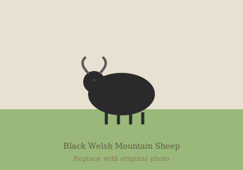

Welcome to Rockbridge Farm
Under several names, what is now Rockbridge Farm has been in operation in York County, Pennsylvania, USA, for over 280 years. For the past 43 years, it has been stewarded by Mr. and Mrs. M.G. Jones.
Rockbridge Farm is your source for humanely-raised sheep free of hormones and full of natural goodness.

Our farm is home to both Black Welsh Mountain sheep and Romney sheep. We take pride in raising our animals with care, maintaining the traditions that have sustained this land for generations.
We invite you to explore our site to learn more about our sheep and browse our selection of wool products.
Contact Us
Phone: (717) 235-1354
Glen Rock, York County, Pennsylvania